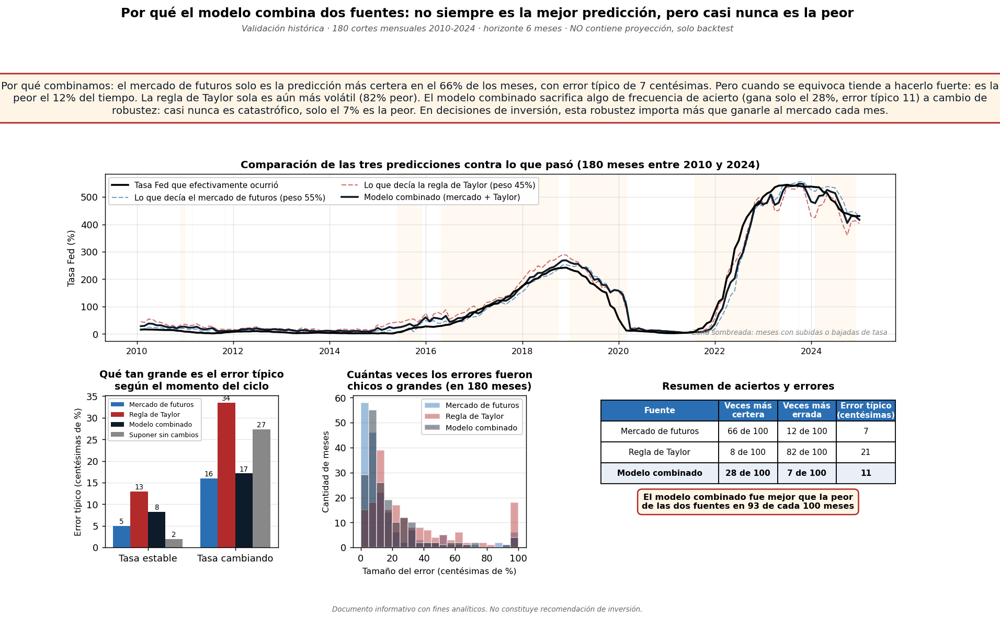
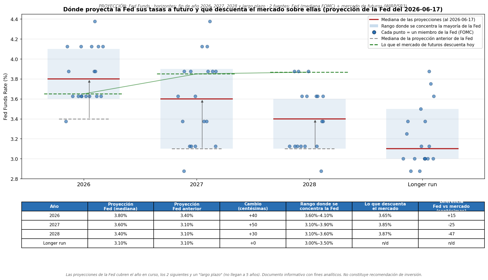
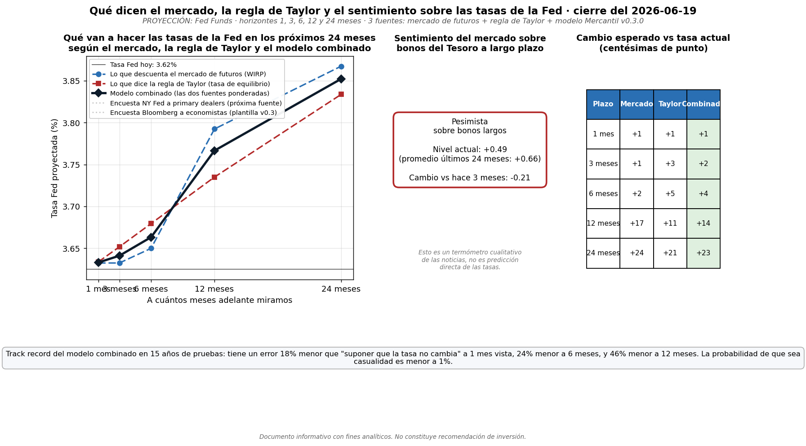
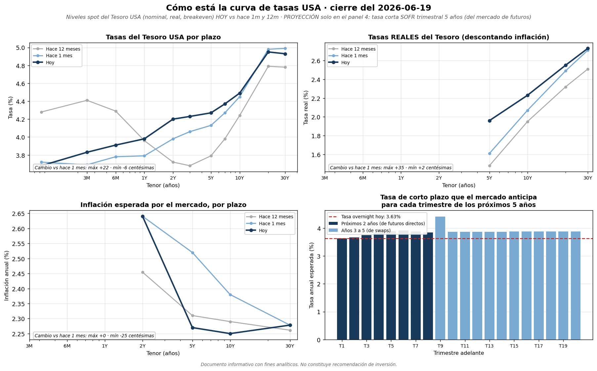
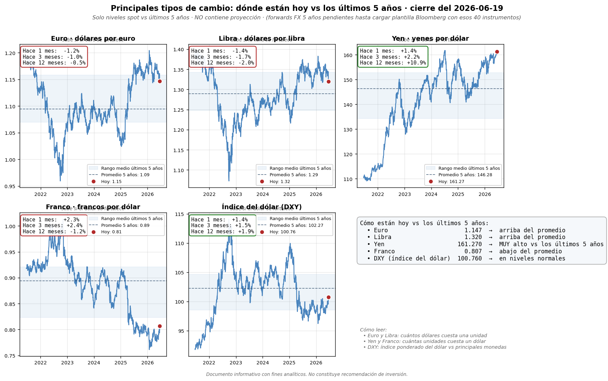
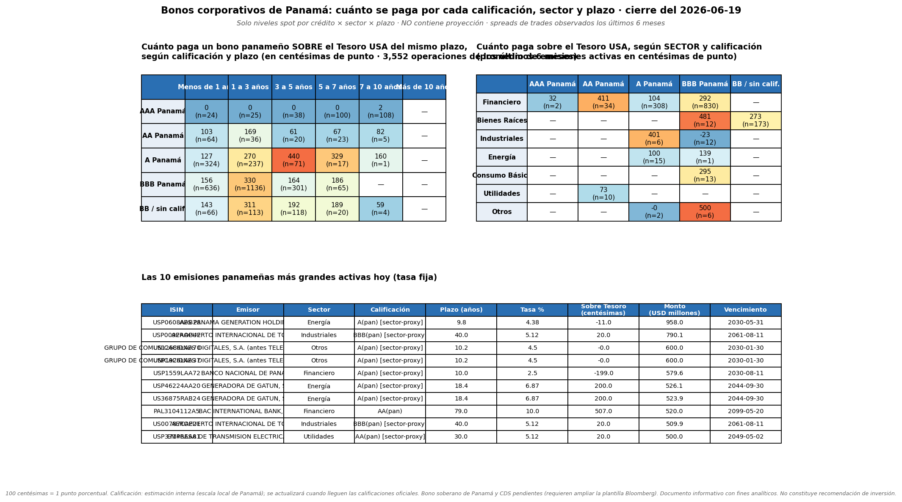
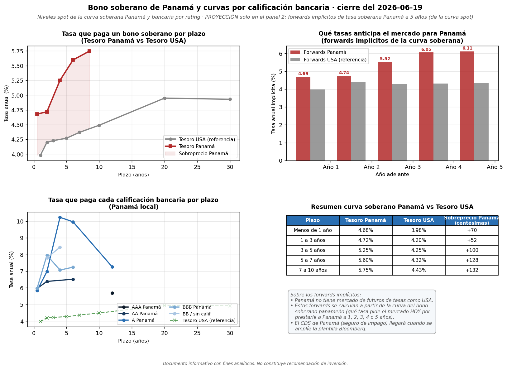

Necesitás un Personal Access Token (PAT) para que el site pueda disparar workflows y guardar tus textos editados. Una sola configuración por dispositivo/navegador.
repo y
workflow ya vienen pre-seleccionados).ghp_…).El token se guarda en localStorage de este navegador. Nunca se envía a otro lado. Si compartís el dispositivo, usá "Borrar token" al terminar.